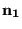
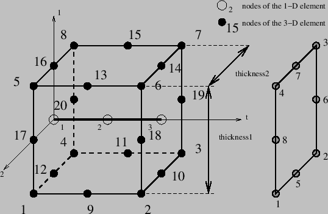
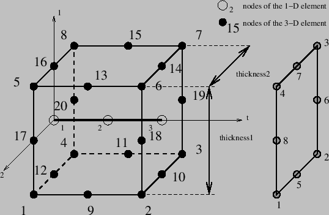
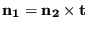
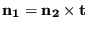

The dashpot element is defined between two nodes (Figure 82). The force in node 2 amounts to:
|  | (10) |
where c is the dashpot coefficient,
 is the velocity vector,
 is the actual location of the nodes and
is the velocity vector,
 is the actual location of the nodes and  is the
actual distance between them. Notice that
. Right now, only
linear dashpots are allowed, i.e. the dashpot coefficient is constant
(i.e. it does not depend on the relative velocity. However, it can depend on
the temperature).
It is defined using the
*DASHPOT keyword card.
is the
actual distance between them. Notice that
. Right now, only
linear dashpots are allowed, i.e. the dashpot coefficient is constant
(i.e. it does not depend on the relative velocity. However, it can depend on
the temperature).
It is defined using the
*DASHPOT keyword card.
The two-node three-dimensional dashpot element is considered as a genuine three-dimensional element. Consequently, if it is connected to a 2D element with special restraints on the third direction (plane stress, plane strain or axisymmetric elements) the user has to take care that the third dimension does not induce rigid body motions in the dashpot nodes.
The dashpot element can only be used in linear dynamic calculations characterized by the *MODAL DYNAMIC keyword card.